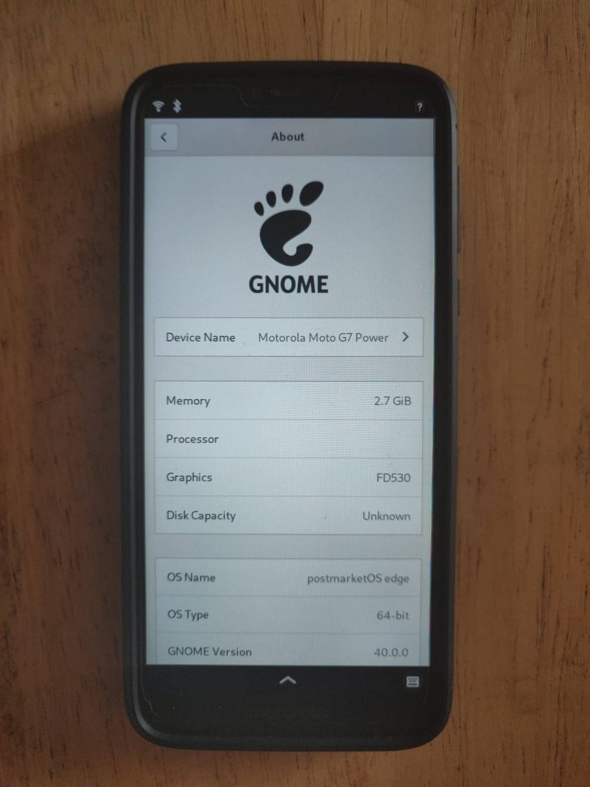

Motorola Moto G7 Power (motorola-ocean)
|  | |
| Manufacturer | Motorola |
|---|---|
| Name | Moto G7 Power |
| Codename | motorola-ocean |
| Released | 2019 |
| Category | testing |
| Original software | Android 9.0/10.0 |
| Hardware | |
| Chipset | Qualcomm Snapdragon 632 (SDM632) |
| CPU |
4x Kryo 250 Gold @ 1.8GHz 4x Kryo 250 Silver @ 1.8GHz |
| GPU | Adreno 506 |
| Display | 1520x720 IPS |
| Storage | 32/64GB |
| Memory | 3/4GB |
| Architecture | aarch64 |
{kind=link}
| USB Networking |
Works
|
|---|---|
| Flashing |
Works
|
| Touchscreen |
Works
|
| Display |
Works
|
| WiFi |
Works
|
| FDE | |
| Mainline |
Works
|
| Battery |
Broken
|
| 3D Acceleration |
Works
|
| Audio |
Works
|
| Bluetooth |
Works
|
| Camera |
Broken
|
| GPS | |
| Mobile data |
Broken
|
| SMS |
Partial
|
| Calls |
Partial
|
| USB OTG / USB-C Role switching | |
| NFC |
Unavailable
|
| Accelerometer |
Broken
|
|---|---|
| Magnetometer | |
| Ambient Light | |
| Proximity | |
| Hall Effect | |
| Barometer | |
| Power Sensor | |
| Camera Flash | |
|---|---|
| Keyboard | |
| Touchpad | |
| USB-A | |
| HDMI/DP | |
| Ir TX | |
| Ir RX | |
| Stylus | |
| Haptics | |
| Ethernet | |
| FOSS bootloader | |
Contributors
- gavodavo aka Ultracoolguy
Maintainer(s)
- gavodavo aka Ultracoolguy
Users owning this device
How to enter flash mode
1. The easiest way is to turn off your phone and press the Power button and the Volume Down button at the same time.
Installation
1. Install lk2nd. You'll need to clone the master-sdm632 branch at msm8953-mainline/lk2nd. Follow the instructions for building, and flash build-msm8953-secondary/lk2nd.img like you would with any boot image.
2. Boot into it(either via fastboot reboot or by powering off then staring). While the "Bootloader is unlocked" warning appears, press Volume Down. A Tux logo and a screen should appear.
3. Do the installation steps you would find at Installation guide. Flash all the necessary stuff(make sure to install the kernel inside lk2nd!) .
4. Select "START" in lk2nd, and let your device do it's thing. Hopefully a SSH connection will get open eventually :)
Modem
While with a little effort you can make modem start and work, like Qualcomm Snapdragon 450/625/626/632 (MSM8953) mentions there's only an experimental fork of ofono working with it. ModemManager recently accepted a MR for supporting QRTR modems(that's us!), but it seems to work only on SDM845 phones.
| If you still want modem for calls and messages ask "ultra (she/her)" on Matrix in the mean time! |
See also
- pmaports!1470 Initial merge request
- Device package
- Kernel package